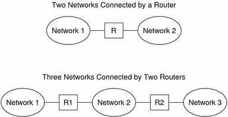
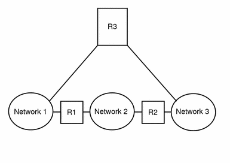

Previous
Previous
Using Private IPv4 Addresses
The IANA has reserved three blocks of IPv4 addresses for companies to use on their private networks. These addresses are defined in RFC 1918, Address Allocation for Private Internets. You can use these private addresses, also known as 1918 addresses, for systems on local networks within a corporate intranet. However, private addresses are not valid on the Internet. Do not use them on systems that must communicate outside the local network.
IPv4 Address Range | netmask |
|---|---|
10.0.0.0 - 10.255.255.255 | 10.0.0.0 |
172.16.0.0 - 172.31.255.255 | 172.16.0.0 |
192.168.0.0 - 192.168.255.255 | 192.168.0.0 |
How IP Addresses Apply to Network Interfaces
To connect to the network, a system must have at least one physical network interface. Each network interface must have its own unique IP address. During Solaris installation, you must supply the IP address for the first interface that the installation program finds. Usually that interface has the name device-name0, for example eri0 or hme0. This interface is considered the primary network interface.
If you add a second network interface to a host, that interface also must have its own unique IP address. When you add the second network interface, the host then becomes multihomed. By contrast, when you add a second network interface to a host and enable IP forwarding, that host becomes a router. See Configuring an IPv4 Router for an explanation.
Each network interface has a device name, a device driver, and an associated device file in the /devices directory. The network interface might have a device name such as eri or smc0, which are device names for two commonly used Ethernet interfaces.
For information and tasks related to interfaces, refer to Chapter 6, Administering Network Interfaces (Tasks).
Note - This book assumes that your systems have Ethernet network interfaces. If you plan to use different network media, refer to the manuals that come with the network interface for configuration information.
Naming Entities on Your Network
After you receive your assigned network IP address and you have given the IP addresses to your systems, the next task is to assign names to the hosts. Then you must determine how to handle name services on your network. You use these names initially when you set up your network and later when you expand your network through routers, bridges, or PPP.
The TCP/IP protocols locate a system on a network by using its IP address. However, if you use a recognizable name, then you can easily identify the system. Therefore, the TCP/IP protocols (and the Solaris OS) require both the IP address and the host name to uniquely identify a system.
From a TCP/IP perspective, a network is a set of named entities. A host is an entity with a name. A router is an entity with a name. The network is an entity with a name. A group or department in which the network is installed can also be given a name, as can a division, a region, or a company. In theory, the hierarchy of names that can be used to identify a network has virtually no limit. The domain name identifies a domain.
Administering Host Names
Many sites let users pick host names for their machines. Servers also require at least one host name, which is associated with the IP address of its primary network interface.
As a system administrator, you must ensure that each host name in your domain is unique. In other words, no two machines on your network can both have the name "fred." However, the machine "fred" might have multiple IP addresses.
When planning your network, make a list of IP addresses and their associated host names for easy access during the setup process. The list can help you verify that all host names are unique.
Selecting a Name Service and Directory Service
The Solaris OS enables you to use three types of name services: local files, NIS, and DNS. Name services maintain critical information about the machines on a network, such as the host names, IP addresses, Ethernet addresses, and so forth. The Solaris OS also gives you the option of using the LDAP directory service in addition to or instead of a name service. For an introduction to name services on Solaris, refer to Part I, "About Naming and Directory Services," in System Administration Guide: Naming and Directory Services (DNS, NIS, and LDAP).
Network Databases
When you install the operating system, you supply the host name and IP address of your server, clients, or standalone system as part of the procedure. The Solaris installation program adds this information into the hosts . This database is part of a set of network databases that contain information necessary for TCP/IP operation on your network. The name service that you select for your network reads these databases.
The configuration of the network databases is critical. Therefore, you need to decide which name service to use as part of the network planning process. Moreover, the decision to use name services also affects whether you organize your network into an administrative domain. Network Databases and the nsswitch.conf File has detailed information on the set of network databases.
Using NIS or DNS as the Name Service
The NIS and DNS name services maintain network databases on several servers on the network. System Administration Guide: Naming and Directory Services (DNS, NIS, and LDAP) describes these name services and explains how to configure the databases. In addition, the guide explain the "namespace" and "administrative domain" concepts in detail.
Using Local Files as the Name Service
If you do not implement NIS, LDAP, or DNS, the network uses local files to provide the name service. The term "local files" refers to the series of files in the /etc directory that the network databases use. The procedures in this book assume you are using local files for your name service, unless otherwise indicated.
Note - If you decide to use local files as the name service for your network, you can set up another name service at a later date.
Domain Names
Many networks organize their hosts and routers into a hierarchy of administrative domains. If you are using the NIS or DNS name service, you must select a domain name for your organization that is unique worldwide. To ensure that your domain name is unique, you should register the domain name with the InterNIC. If you plan to use DNS, you also need to register your domain name with the InterNIC.
The domain name structure is hierarchical. A new domain typically is located below an existing, related domain. For example, the domain name for a subsidiary company can be located below the domain of the parent company. If the domain name has no other relationship, an organization can place its domain name directly under one of the existing top-level domains.
The following are a few examples of top-level domains:
.com - Commercial companies (international in scope)
.edu - Educational institutions (international in scope)
.gov - U.S. government agencies
.fr - France
You select the name that identifies your organization, with the provision that the name must be unique.
Administrative Subdivisions
The question of administrative subdivisions deals with matters of size and control. The more hosts and servers that you have in a network, the more complex your management task. You might want to handle such situations by setting up additional administrative divisions. Add networks of a particular class. Divide existing networks into subnets. The decision about setting up administrative subdivisions for your network is determined by the following factors:
How large is the network?
A single administrative division can handle a single network of several hundred hosts, all in the same physical location and requiring the same administrative services. However, sometimes you should establish several administrative subdivisions. Subdivisions are particularly useful if you have a small network with subnets and the network is scattered over an extensive geographical area.
Do users on the network have similar needs?
For example, you might have a network that is confined to a single building and supports a relatively small number of machines. These machines are divided among a number of subnetworks. Each subnetwork supports groups of users with different needs. In this example, you might use an administrative subdivision for each subnet.
Planning for Routers on Your Network
Recall that in TCP/IP, two types of entities exist on a network: hosts and routers. All networks must have hosts, while not all networks require routers. The physical topology of the network determines if you need routers. This section introduces the concepts of network topology and routing. These concepts are important when you decide to add another network to your existing network environment.
Network Topology Overview
Network topology describes how networks fit together. Routers are the entities that connect networks to each other. A router is any machine that has two or more network interfaces and implements IP forwarding. However, the system cannot function as a router until properly configured, as described in Configuring an IPv4 Router.
Routers connect two or more networks to form larger internetworks. The routers must be configured to pass packets between two adjacent networks. The routers also should be able to pass packets to networks that lie beyond the adjacent networks.
The following figure shows the basic parts of a network topology. The first illustration shows a simple configuration of two networks that are connected by a single router. The second illustration shows a configuration of three networks, interconnected by two routers. In the first example, Router R joins Network 1 and Network 2 into a larger internetwork. In the second example, Router R1 connects Networks 1 and 2. Router R2 connects Networks 2 and 3. The connections form a network that includes Networks 1, 2, and 3.
Figure 2-3 Basic Network Topology
In addition to joining networks into internetworks, routers route packets between networks that are based on the addresses of the destination network. As internetworks grow more complex, each router must make more and more decisions about the packet destinations.
The following figure shows a more complex case. Router R3 directly connects networks 1 and 3. The redundancy improves reliability. If network 2 goes down, router R3 still provides a route between networks 1 and 3. You can interconnect many networks. However, the networks must use the same network protocols.
Figure 2-4 A Network Topology That Provides an Additional Path Between Networks
